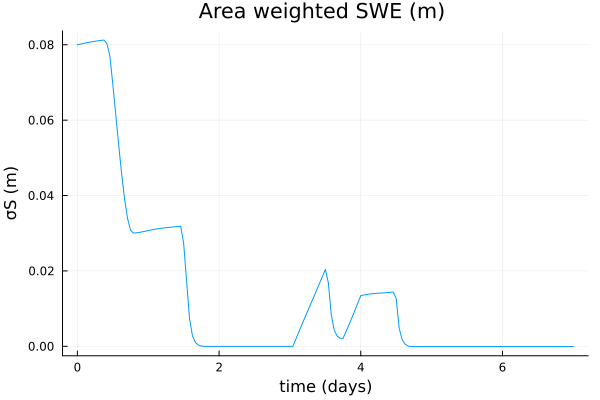
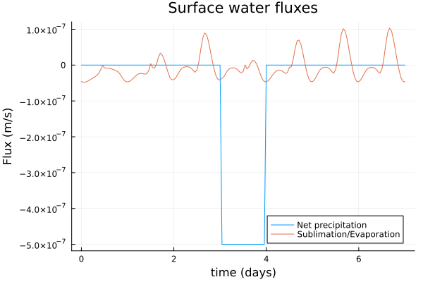
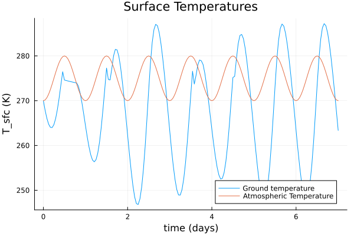
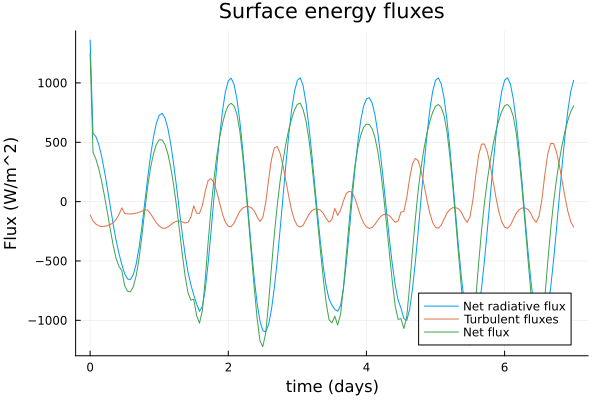

Introduction to the Land Bucket Model
The land bucket model implemented in ClimaLand is based off of the models of Manabe (1969)[1], Milly and Shmakin (2002)[2], and the SLIM model (Laguë, Bonan, Swann 2019)[3], with small changes, as noted.
This tutorial explains in brief the core equations and the necessary parameters of the bucket model, and shows how to set up a simulation in standalone mode. More detail for coupled runs can be found in the ClimaCoupler.jl documentation and in the coupled simulation tutorial.
At each coordinate point on the surface, we solve ordinary differential equations for the subsurface water storage of land (W, m), the snow water equivalent multiplied by the snow cover fraction (σS, m), and the surface water content of land (Ws, m). We additionally solve a partial differential equation for the land temperature as a function of depth (T, K). The snow cover fraction is given by a heaviside function in the current code.
In what follows, surface fluxes over soil generally indicate fluxes over non-snow-covered regions. The exception is the albedo of vegetated and non-vegetated surfaces, for which we use the symbol α_sfc.
All equation variables are defined immediately below. We have:
$\frac{d W}{dt} = -I,$
$\frac{d Ws}{dt} = -(P_{liq} + σM + (1-σ) E_{soil} - I),$
$\frac{d σS}{dt} = -(P_{snow} + σE_{snow} - σM),$
$ρc \frac{\partial T}{\partial t} = κ_{soil} \frac{\partial T}{\partial z}$
$F_{bot} = 0.0 = -κ_{soil} \frac{\partial T}{\partial z}|_{z = z_{bot}}$
$(1-σ) (R_n+ SHF + LHF)_{soil} + σG_{undersnow} = -κ_{soil} \frac{\partial T}{\partial z}|_{z = z_{sfc}}$
$G_{undersnow} = (R_n+ SHF + LHF)_{snow} - F_{intosnow}$
$F_{intosnow} = -ρ_l L_{f,0} (P_{snow} + E_{snow}-M)$
$R_n = -(1-α)*SW↓ -LW↓ + σ_{SB} T_{sfc}^4$
where the water fluxes are : I the infiltration as defined in [1], P_liq (m/s) the water volume flux of precipitation, P_snow (m/s) the water volume flux in the form of snow, (1-σ)E_soil (m/s) the water volume flux in evaporation, σE_snow the water volume flux in sublimation from snow, and σM (m/s) the water volume flux in melting of snow. The melt rate is defined via the net surface flux when surface temperatures are above freezing. All fluxes are defined to be positive if towards the atmosphere (cooling land or decreasing water mass in land) and negative if towards land (warming land or increasing water mass). Hence the melting flux is negative since it warms land, and precipitation fluxes are negative since they increase water mass on land.
For heat fluxes, we have R_n the net radiation, SHF the sensible heat flux, LHF the latent heat flux, G_undersnow the heat flux into snow-covered soil, and F_intosnow the heat flux into the snowpack itself. Note that the water balance equation for snow is equivalent to the heat balance equation, since we neglect the sensible heat contribution and only track the latent heat contribution. We neglect the energy in liquid precipitation.
Finally, we have α_bareground_func(lat, lon) the (snow-free) surface albedo, ρc the volumetric heat capacity of the land, σ_SB the Stefan-Boltzmann constant, and κ_soil the thermal conductivity. The albedo is a linear interpolation between the albedo of surface and snow, as decribed in [3]. The surface temperature is taken to be equal to the temperature T at the first grid point, assumed to be the same for soil and snow. At present the snow cover fraction is a heaviside function, and only one set of surface fluxes is computed per grid point.
Turbulent surface fluxes of sensible heat, latent heat, and water vapor (SHF, LHF, E) are computed using Monin-Obukhov theory; SW↓ and LW↓ are the downward fluxes in short and long wavelength bands. We use the same roughness lengths for snow and soil. Note that with the exception of precipitation and downwelling radiation, all fluxes are defined such that positive is towards the atmosphere.
As the temperature at the surface of the soil and snow is the same, only the evaporation changes between the two surface coverage types. We have
$E_{soil} = β(W, W_f) E(q_{sat}(T_{sfc}, ρ_{sfc}; liquid),$
where β is the factor used in [1] which accounts for the fact that soil does not evaporate at the potential rate when it is not saturated. This makes use of the field capacity parameter W_f. We also have
$E_{snow} = E(q_{sat}(T_{sfc}, ρ_{sfc}; ice).$
Simulating a standalone bucket model
First, we need to import necessary packages. We use SciMLBase.jl and ClimaTimeSteppers.jl for the timestepping.
import SciMLBase
import ClimaTimeSteppers as CTSWe use ClimaCore for setting up the domain/coordinate points. While this infrastructure isn't really necessary for standalone simulations, adhering to it makes setting up coupled simulations very easy. It also is nice to rely on ClimaCore utilities because they have been designed in advance for running distributed simulations.
using ClimaCoreWe also use ClimaParams, which strives to ensure a common set of parameters across all Clima models, and to make parameter estimation more seamless.
import ClimaParams as CPWe also use Insolation to calculate solar zenith angle and solar insolation.
Lastly, let's bring in the bucket model types (from ClimaLand) that we will need access to.
using ClimaLand.Bucket:
BucketModel, BucketModelParameters, PrescribedBaregroundAlbedo
using ClimaLand.Domains: coordinates, Column
using ClimaLand:
initialize,
make_update_aux,
make_exp_tendency,
make_set_initial_cache,
PrescribedAtmosphere,
PrescribedRadiativeFluxes
using ClimaUtilities.TimeVaryingInputs: TimeVaryingInputWe also want to plot the solution
using PlotsAnd we need to use the DateTime type to store start dates
using Dates
FT = Float32;As mentioned we use ClimaParams for earth parameters that are required across models (e.g. the density of water and ice, the latent heat of fusion at a reference temperature, etc). The land model requires additional parameters as described in the text above. These two sets are combined in the object BucketModelParameters as follows:
import ClimaLand
import ClimaLand.Parameters as LP
earth_param_set = LP.LandParameters(FT);Set up the model domain. At every surface coordinate point, we'll solve an ODE for W and Ws, and for every subsurface point, we solve for T. In coupled simulations run at the same resolution as the atmosphere, the bucket horizontal resolution would match the horizontal resolution at the lowest level of the atmosphere model. In general, however, the two resolutions do not need to match. Here we just set up something simple - a Column.
soil_depth = FT(3.5);
bucket_domain = Column(; zlim = (-soil_depth, FT(0.0)), nelements = 10);
surface_space = bucket_domain.space.surfaceClimaCore.Spaces.PointSpace{ClimaComms.SingletonCommsContext{ClimaComms.CPUSingleThreaded}, ClimaCore.DataLayouts.DataF{ClimaCore.Geometry.LocalGeometry{(3,), ClimaCore.Geometry.ZPoint{Float32}, Float32, StaticArraysCore.SMatrix{1, 1, Float32, 1}}, SubArray{Float32, 1, Matrix{Float32}, Tuple{Int64, Base.Slice{Base.OneTo{Int64}}}, true}}}(ClimaComms.SingletonCommsContext{ClimaComms.CPUSingleThreaded}(ClimaComms.CPUSingleThreaded()), ClimaCore.DataLayouts.DataF{ClimaCore.Geometry.LocalGeometry{(3,), ClimaCore.Geometry.ZPoint{Float32}, Float32, StaticArraysCore.SMatrix{1, 1, Float32, 1}}, SubArray{Float32, 1, Matrix{Float32}, Tuple{Int64, Base.Slice{Base.OneTo{Int64}}}, true}}
Float32[0.0, 0.35, 0.175, 2.85714, 0.35, 2.85714, 8.16327, 0.1225])Define our PrescribedBaregroundAlbedo model using a constant bareground surface and snow albedo: The bareground albedo is a function of coordinates, which would be (x,y) on a plane, and (lat,lon) on a sphere. It is also an option to supply a netcdf file with the bareground albedo.
α_bareground_func = (coordinate_point) -> 0.2;
α_snow = FT(0.8);
albedo =
PrescribedBaregroundAlbedo{FT}(α_snow, α_bareground_func, surface_space);The critical snow level setting the scale for when we interpolate between snow and surface albedo
σS_c = FT(0.2);The field capacity of the soil
W_f = FT(0.15);Roughness lengths (meters)
z_0m = FT(1e-2);
z_0b = FT(1e-3);Thermal parameters of soil
κ_soil = FT(0.7);
ρc_soil = FT(2e6);Snow melt timescale
τc = FT(3600);Simulation start date, end time, and timestep
t0 = 0.0;
tf = 7 * 86400;
Δt = 3600.0;
bucket_parameters = BucketModelParameters(FT; albedo, z_0m, z_0b, τc);The PrescribedAtmosphere and PrescribedRadiation need to take in a reference time, the date of the start of the simulation. In this tutorial we will consider this January 1, 2005.
start_date = DateTime(2005);To drive the system in standalone mode, the user must provide prescribed functions of time for the water volume flux in precipitation, for the net downward shortwave and longwave radiative energy fluxes (SW↓, LW↓, W/m^2), for the atmospheric temperature T_a, wind speed u_a (m/s), specific humidity q_a, and air density ρ_a (kg/m^3) at a reference height h_a (m).
Here we define the model drivers Prescribed atmospheric variables
Precipitation:
precip = (t) -> 0;
snow_precip = (t) -> -5e-7 * (t > 3 * 86400) * (t < 4 * 86400);Diurnal temperature variations:
T_atmos = (t) -> 275.0 + 5.0 * sin(2.0 * π * t / 86400 - π / 2);Constant otherwise:
u_atmos = (t) -> 3.0;
q_atmos = (t) -> 0.005;
h_atmos = FT(2);
P_atmos = (t) -> 101325;We need to warp all these objects in TimeVaryingInputs (this is because in general PrescribedAtmosphere could take numerical data)
bucket_atmos = PrescribedAtmosphere(
TimeVaryingInput(precip),
TimeVaryingInput(snow_precip),
TimeVaryingInput(T_atmos),
TimeVaryingInput(u_atmos),
TimeVaryingInput(q_atmos),
TimeVaryingInput(P_atmos),
start_date,
h_atmos,
earth_param_set,
);Prescribed radiation – a prescribed downwelling SW diurnal cycle, with a peak at local noon, and a prescribed downwelling LW radiative flux, assuming the air temperature is on average 275 degrees K with a diurnal amplitude of 5 degrees K:
SW_d = (t) -> @. max(1361 * sin(2π * t / 86400 - π / 2));
LW_d = (t) -> 5.67e-8 * (275.0 + 5.0 * sin(2.0 * π * t / 86400 - π / 2))^4;
bucket_rad = PrescribedRadiativeFluxes(
FT,
TimeVaryingInput(SW_d),
TimeVaryingInput(LW_d),
start_date,
);Then, we create the model object, which contains the drivers, parameters, domain, and is associated with the correct differential equations for the bucket model:
model = BucketModel(
parameters = bucket_parameters,
domain = bucket_domain,
atmosphere = bucket_atmos,
radiation = bucket_rad,
);Note the holder structs for the radiation and atmosphere functions: they are named Prescribed. In coupled simulations, we would use a different type and rely on multiple dispatch to obtain the atmospheric and radiative quantitites from the coupler.
Like all ClimaLand models, we set up the state vector using initialize:
Y, p, coords = initialize(model);We can inspect the prognostic and auxiliary variables of the model:
ClimaLand.prognostic_vars(model)
Y.bucket |> propertynames(:W, :T, :Ws, :σS)The auxiliary variables in this case are the surface temperature, the turbulent fluxes, the net radiation, and the surface specific humidity.
ClimaLand.auxiliary_vars(model)
p.bucket |> propertynames(:q_sfc, :turbulent_fluxes, :R_n, :T_sfc, :α_sfc, :ρ_sfc, :snow_cover_fraction, :F_sfc, :partitioned_fluxes, :G, :snow_melt, :infiltration, :top_bc_wvec)Next is to set initial conditions.
Y.bucket.T .= FT(270);
Y.bucket.W .= FT(0.05);
Y.bucket.Ws .= FT(0.0);
Y.bucket.σS .= FT(0.08);We also set the initial values of the cache here:
set_initial_cache! = make_set_initial_cache(model);
set_initial_cache!(p, Y, t0);Then to create the entire right hand side (tendency) function for the system of ordinary differential equations:
exp_tendency! = make_exp_tendency(model);Now we choose our timestepping algorithm.
timestepper = CTS.RK4()
ode_algo = CTS.ExplicitAlgorithm(timestepper)ClimaTimeSteppers.IMEXAlgorithm{ClimaTimeSteppers.Unconstrained, ClimaTimeSteppers.RK4, ClimaTimeSteppers.IMEXTableau{ClimaTimeSteppers.SparseCoeffs{(4, 4), (true, false, true, true, true, true, false, true, true, true, true, false, true, true, true, true), StaticArraysCore.SMatrix{4, 4, Float64, 16}}, ClimaTimeSteppers.SparseCoeffs{(4,), (false, false, false, false), StaticArraysCore.SVector{4, Float64}}, ClimaTimeSteppers.SparseCoeffs{(4,), (true, false, false, false), StaticArraysCore.SVector{4, Float64}}, ClimaTimeSteppers.SparseCoeffs{(4, 4), (true, false, true, true, true, true, false, true, true, true, true, false, true, true, true, true), StaticArraysCore.SMatrix{4, 4, Float64, 16}}, ClimaTimeSteppers.SparseCoeffs{(4,), (false, false, false, false), StaticArraysCore.SVector{4, Float64}}, ClimaTimeSteppers.SparseCoeffs{(4,), (true, false, false, false), StaticArraysCore.SVector{4, Float64}}}, Nothing}(ClimaTimeSteppers.Unconstrained(), ClimaTimeSteppers.RK4(), ClimaTimeSteppers.IMEXTableau{ClimaTimeSteppers.SparseCoeffs{(4, 4), (true, false, true, true, true, true, false, true, true, true, true, false, true, true, true, true), StaticArraysCore.SMatrix{4, 4, Float64, 16}}, ClimaTimeSteppers.SparseCoeffs{(4,), (false, false, false, false), StaticArraysCore.SVector{4, Float64}}, ClimaTimeSteppers.SparseCoeffs{(4,), (true, false, false, false), StaticArraysCore.SVector{4, Float64}}, ClimaTimeSteppers.SparseCoeffs{(4, 4), (true, false, true, true, true, true, false, true, true, true, true, false, true, true, true, true), StaticArraysCore.SMatrix{4, 4, Float64, 16}}, ClimaTimeSteppers.SparseCoeffs{(4,), (false, false, false, false), StaticArraysCore.SVector{4, Float64}}, ClimaTimeSteppers.SparseCoeffs{(4,), (true, false, false, false), StaticArraysCore.SVector{4, Float64}}}(ClimaTimeSteppers.SparseCoeffs{(4, 4), (true, false, true, true, true, true, false, true, true, true, true, false, true, true, true, true), StaticArraysCore.SMatrix{4, 4, Float64, 16}}([0.0 0.0 0.0 0.0; 0.5 0.0 0.0 0.0; 0.0 0.5 0.0 0.0; 0.0 0.0 1.0 0.0]), ClimaTimeSteppers.SparseCoeffs{(4,), (false, false, false, false), StaticArraysCore.SVector{4, Float64}}([0.16666666666666666, 0.3333333333333333, 0.3333333333333333, 0.16666666666666666]), ClimaTimeSteppers.SparseCoeffs{(4,), (true, false, false, false), StaticArraysCore.SVector{4, Float64}}([0.0, 0.5, 0.5, 1.0]), ClimaTimeSteppers.SparseCoeffs{(4, 4), (true, false, true, true, true, true, false, true, true, true, true, false, true, true, true, true), StaticArraysCore.SMatrix{4, 4, Float64, 16}}([0.0 0.0 0.0 0.0; 0.5 0.0 0.0 0.0; 0.0 0.5 0.0 0.0; 0.0 0.0 1.0 0.0]), ClimaTimeSteppers.SparseCoeffs{(4,), (false, false, false, false), StaticArraysCore.SVector{4, Float64}}([0.16666666666666666, 0.3333333333333333, 0.3333333333333333, 0.16666666666666666]), ClimaTimeSteppers.SparseCoeffs{(4,), (true, false, false, false), StaticArraysCore.SVector{4, Float64}}([0.0, 0.5, 0.5, 1.0])), nothing)Then we can set up the simulation and solve it:
prob = SciMLBase.ODEProblem(
CTS.ClimaODEFunction(T_exp! = exp_tendency!, dss! = ClimaLand.dss!),
Y,
(t0, tf),
p,
);We need a callback to get and store the auxiliary fields, as they are not stored by default. We also need a callback to update the drivers (atmos and radiation)
saveat = collect(t0:Δt:tf);
saved_values = (;
t = Array{Float64}(undef, length(saveat)),
saveval = Array{NamedTuple}(undef, length(saveat)),
);
saving_cb = ClimaLand.NonInterpSavingCallback(saved_values, saveat);
updateat = copy(saveat)
model_drivers = ClimaLand.get_drivers(model)
updatefunc = ClimaLand.make_update_drivers(model_drivers)
driver_cb = ClimaLand.DriverUpdateCallback(updateat, updatefunc)
cb = SciMLBase.CallbackSet(driver_cb, saving_cb)
sol = SciMLBase.solve(prob, ode_algo; dt = Δt, saveat = saveat, callback = cb);Extracting the solution from what is returned by the ODE.jl commands is a bit clunky right now, but we are working on hiding some of this. parent extracts the underlying data from the ClimaCore.Fields.Field object and we loop over the solution sol because of how the data is stored within solutions returned by ODE.jl - indexed by timestep.
W = [parent(sol.u[k].bucket.W)[1] for k in 1:length(sol.t)];
Ws = [parent(sol.u[k].bucket.Ws)[1] for k in 1:length(sol.t)];
σS = [parent(sol.u[k].bucket.σS)[1] for k in 1:length(sol.t)];
T_sfc =
[parent(saved_values.saveval[k].bucket.T_sfc)[1] for k in 1:length(sol.t)];
evaporation = [
parent(saved_values.saveval[k].bucket.turbulent_fluxes.vapor_flux)[1]
for k in 1:length(sol.t)
];
R_n = [parent(saved_values.saveval[k].bucket.R_n)[1] for k in 1:length(sol.t)];The turbulent energy flux is the sum of latent and sensible heat fluxes.
LHF = [
parent(saved_values.saveval[k].bucket.turbulent_fluxes.lhf)[1] for
k in 1:length(sol.t)
];
SHF = [
parent(saved_values.saveval[k].bucket.turbulent_fluxes.shf)[1] for
k in 1:length(sol.t)
];
turbulent_energy_flux = SHF .+ LHF
plot(
sol.t ./ 86400,
W,
label = "",
xlabel = "time (days)",
ylabel = "W (m)",
title = "Land water storage (m)",
)
savefig("w.png")"/home/runner/work/ClimaLand.jl/ClimaLand.jl/docs/src/generated/standalone/Bucket/w.png"
plot(
sol.t ./ 86400,
σS,
label = "",
xlabel = "time (days)",
ylabel = "σS (m)",
title = "Area weighted SWE (m) ",
)
savefig("swe.png")"/home/runner/work/ClimaLand.jl/ClimaLand.jl/docs/src/generated/standalone/Bucket/swe.png"
plot(
sol.t ./ 86400,
snow_precip.(sol.t),
label = "Net precipitation",
xlabel = "time (days)",
ylabel = "Flux (m/s)",
title = "Surface water fluxes",
legend = :bottomright,
)
plot!(sol.t ./ 86400, evaporation, label = "Sublimation/Evaporation")
savefig("water_f.png")"/home/runner/work/ClimaLand.jl/ClimaLand.jl/docs/src/generated/standalone/Bucket/water_f.png"
plot(
sol.t ./ 86400,
T_sfc,
title = "Surface Temperatures",
label = "Ground temperature",
xlabel = "time (days)",
ylabel = "T_sfc (K)",
legend = :bottomright,
)
plot!(sol.t ./ 86400, T_atmos.(sol.t), label = "Atmospheric Temperature")
savefig("t.png")"/home/runner/work/ClimaLand.jl/ClimaLand.jl/docs/src/generated/standalone/Bucket/t.png"
plot(
sol.t ./ 86400,
R_n,
label = "Net radiative flux",
xlabel = "time (days)",
ylabel = "Flux (W/m^2)",
title = "Surface energy fluxes",
legend = :bottomright,
)
plot!(sol.t ./ 86400, turbulent_energy_flux, label = "Turbulent fluxes")
plot!(sol.t ./ 86400, R_n .+ turbulent_energy_flux, label = "Net flux")
savefig("energy_f.png")"/home/runner/work/ClimaLand.jl/ClimaLand.jl/docs/src/generated/standalone/Bucket/energy_f.png"
References
[1] Manabe, S. (1969) CLIMATE AND THE OCEAN CIRCULATION I: The Atmospheric Circulation and the Hydrology of the Earth's Surface. Monthly Weather Review, Volume 97: Issue 11, p 739-774. [2] Milly, P. C. D. and Shmakin, A.B. (2002) Global Modeling of Land Water and Energy Balances. Part I: The Land Dynamics (LaD) Model Journal of Hydrometeorology, Volume 3: Issue 3, p 283-299. [3] Laguë, M., Bonan, G., and Swann, A. (2019) Seperating the Impact of Individual Land Surface Properties on the Terrestrial Surface Energy Budget in both the Coupled and Uncoupled Land-Atmosphere System Volume 32: Issue 18, p 5725-5744
This page was generated using Literate.jl.